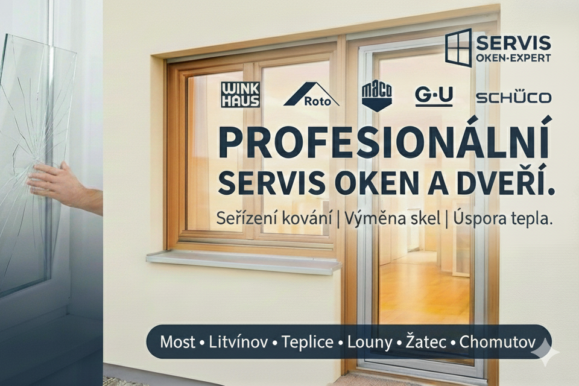

Seřízení kování, výměna skel a servis pro domácnosti, SVJ, bytová družstva i firmy.
Vdechněte svým oknům nový život. Nabízíme odborné seřízení kování, výměnu rozbitých skel a kompletní servis pro plastová, hliníková i eurookna.
Díky našim rozsáhlým zkušenostem z instalací přesně víme, kde vznikají problémy a jak je efektivně řešit. Nečekejte na drahou výměnu celých oken – často stačí odborný zásah a budou sloužit a těsnit jako nová.

Drhne vám klička, okno nedovírá nebo jde ztuha otevřít? Specializujeme se na servis a opravy celoobvodového kování renomovaných výrobců.
Skla neopravujeme, ale měníme za nová a kvalitnější.
Nezáleží na materiálu. Máme praxi s plastovými profily, hliníkovými konstrukcemi i dřevěnými eurookny.
Rychlý servis pro váš byt či dům. Přijedeme, posoudíme závadu, vyměníme poškozené díly a seřídíme okna pro maximální úsporu tepla.
Nabízíme kompletní péči o okenní výplně vašich nemovitostí.
Jsme váš lokální partner. Servis oken zajišťujeme v těchto městech a jejich okolí:
Napište nám, co potřebujete — nezávazně a bez čísla objednávky. Ozveme se Vám a domluvíme prohlídku nebo termín servisu.
Zavolejte nebo napište — odpovíme co nejdříve a domluvíme termín zásahu.